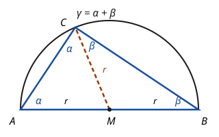

Der Satz des Thales
Mit einem KI-Tutor lernen
Ein KI-Tutor erklärt dir diese Seite und hilft dir bei den Aufgaben. Wähl deinen Assistenten:
Mit Claude öffnen Mit ChatGPT öffnen Mit Mistral Vibe öffnen
Du nutzt dein eigenes Konto beim Anbieter. Der Assistent ist kein Angebot von lernapps.net: lernapps liefert nur Inhalte und Aufgaben. Die Wahl gilt für alle Seiten, nur auf diesem Gerät.
Was du hier lernst
Du kannst gleich erklären, warum ein Winkel am Kreis immer 90° groß ist. Du brauchst dafür die Winkelsumme im Dreieck.
Selin: Der Teich im Schulgarten ist rund. Der Weg AB geht quer durch die Mitte.
Piet: Wir spannen von A und B je eine Schnur zu einem Pfosten C am Teichrand.
Selin: Wo muss C stehen, damit die Ecke bei C ein rechter Winkel wird?
Aufgabe
Lösung
180° richtige Antwort
Das gilt für jedes Dreieck, auch für das Dreieck aus den Schnüren und dem Weg.
90°
90° ist ein rechter Winkel, nicht die Summe aller drei Winkel.
360°
360° ist die Winkelsumme im Viereck, im Dreieck sind es 180°.
Die Winkel eines Dreiecks ergeben immer 180°.
Am Halbkreis ziehen
Wenn du einen rechten Winkel zeichnen willst, ohne ihn zu messen, brauchst du einen Weg. Der Halbkreis zeigt einen.
Der Weg AB ist der Durchmesser des Kreises, M ist seine Mitte. Ziehe den Punkt C auf dem Halbkreis. Mit der Maus oder dem Finger ziehst du den markierten Punkt C. Mit der Tastatur wählst du den Punkt mit der Tabulatortaste und bewegst ihn mit den Pfeiltasten. Stelle C nah an A, in die Mitte und nah an B. Lies jedes Mal die Winkel α, β und γ ab.
α = 30°, β = 60°, γ = 90°
Die Figur steht am Start.Ein Halbkreis über dem Durchmesser AB, darauf der Punkt C. Drei Stellungen von C, gemessen am Dreieck ABC: Steht C nah bei B, ist α = 15°, β = 75° und γ = 90°. Steht C oben in der Mitte, ist α = 45°, β = 45° und γ = 90°. Steht C nah bei A, ist α = 75°, β = 15° und γ = 90°. Die Winkel bei A und B ändern sich, der Winkel bei C nicht.
Was bleibt gleich?
Wenn du an der Figur etwas entdeckt hast, hältst du es als Vermutung fest und prüfst sie dann.
Aufgabe
Lösung
α, der Winkel bei A
α wird beim Ziehen größer, wenn C zu A wandert, und kleiner, wenn C zu B wandert.
β, der Winkel bei B
β ändert sich entgegengesetzt zu α. Es bleibt nicht gleich.
γ, der Winkel bei C richtige Antwort
Die Messung zeigt an jeder Stelle denselben Wert, 90°.
Beim Ziehen ändern sich α und β, γ bleibt 90°. Das ist erst eine Vermutung. Gleich begründest du sie.
Warum ist das so?
Wenn du sicher sein willst, dass es immer klappt, reicht das Ziehen nicht, du brauchst einen Beweis.
Messen zeigt dir nur einzelne Stellungen. Ein Beweis gilt für jede. Ein Beweis erklärt mit Sätzen, die du schon hast, warum eine Vermutung immer stimmt. Im Bild siehst du den Radius von M, der Mitte des Kreises, nach C. Dann sind MA, MB und MC alle gleich lang, nämlich so lang wie der Radius r.

© CC0-1.0Zwei gleichschenklige Dreiecke teilen das Dreieck ABC. Im linken Dreieck AMC liegt α bei A und bei C, im rechten Dreieck MBC liegt β bei B und bei C.
Der Beweis in sechs Schritten:
In Schritt 1 und 2 sind die Basiswinkel gleich, weil die Dreiecke gleichschenklig sind. In Schritt 3 liegt M auf AB, darum liegt der Strahl CM im Winkel bei C. In Schritt 5 ersetzt du α + β durch γ.
Merke
Wenn du den Satz später wieder brauchst, findest du ihn hier kurz zusammengefasst.
- Satz des Thales
Liegt der Punkt C (nicht A oder B) auf dem Kreis über dem Durchmesser AB, dann hat das Dreieck ABC bei C einen rechten Winkel.
Achtung
Der Satz gilt nur, wenn AB der Durchmesser ist und C auf dem Kreis liegt.
Übung
Wenn du prüfen willst, ob du das anwenden kannst, löst du Aufgaben mit neuen Zahlen und neuen Fällen.
Aufgabe
Lösung
Richtige Antwort: Die Aussage stimmt nicht.
Der Beweis braucht, dass M auf AB liegt. Nur dann ist der Winkel bei C gleich α + β.
Aufgabe
Drei Beispielaufgaben, jede mit ihrer Lösung:
Aufgabe Nr. 1
Der Punkt C liegt auf dem Halbkreis über AB. Im Dreieck ABC ist α = 65°. Wie groß ist β?
Tipp
Der Winkel bei C ist 90°. Die drei Winkel ergeben 180°.
Lösung
- Der Satz des Thales sagt: γ = 90°.
- Die Winkelsumme ist 180°, also α + β = 180° − 90° = 90°.
- β = 90° − 65° = 25°.
Richtige Antwort: 25 °
Aufgabe Nr. 2
Der Punkt C liegt auf dem Halbkreis über AB. Im Dreieck ABC ist α = 40°. Wie groß ist β?
Tipp
Der Winkel bei C ist 90°. Die drei Winkel ergeben 180°.
Lösung
- Der Satz des Thales sagt: γ = 90°.
- Die Winkelsumme ist 180°, also α + β = 180° − 90° = 90°.
- β = 90° − 40° = 50°.
Richtige Antwort: 50 °
Aufgabe Nr. 3
Der Punkt C liegt auf dem Halbkreis über AB. Im Dreieck ABC ist α = 20°. Wie groß ist β?
Tipp
Der Winkel bei C ist 90°. Die drei Winkel ergeben 180°.
Lösung
- Der Satz des Thales sagt: γ = 90°.
- Die Winkelsumme ist 180°, also α + β = 180° − 90° = 90°.
- β = 90° − 20° = 70°.
Richtige Antwort: 70 °
Aufgabe
Lösung
Richtige Antwort: 1. Zeichne die Strecke AB., 2. Bestimme die Mitte M von AB., 3. Zeichne den Kreis um M durch A und B., 4. Wähle einen Punkt C auf dem Kreis., 5. Verbinde C mit A und mit B.
Erst der Kreis, dann der Punkt auf ihm. Der Winkel bei C ist dann 90°, ohne Messen.
Aufgabe
Lösung
Die Winkel bei A und B sind gleich, also ist der Winkel bei C ein rechter.
α und β sind nur gleich groß, wenn C genau über der Mitte steht. Das gilt nicht für jeden Punkt.
Mit M als Mitte sind MA, MB und MC gleich lang. Dann folgt aus der Winkelsumme γ = 90°. richtige Antwort
So geht der Beweis. Er gilt für jede Stellung von C.
Ich habe drei Stellungen gemessen, immer 90°, also gilt es immer.
Messen zeigt einzelne Fälle und stützt die Vermutung. Ein Beweis gilt für jeden Fall.
Ein Beweis gilt für jede Stellung von C.
Begründe in eigenen Worten
Wenn du einen Satz wirklich verstanden hast, kannst du ihn mit eigenen Worten begründen.
Offene Aufgabe
Erkläre in zwei bis vier Sätzen, warum der Winkel bei C im Halbkreis immer 90° groß ist.
Eine gute Antwort enthält:
- Mit dem Mittelpunkt M sind MA, MB und MC gleich lang, so entstehen zwei gleichschenklige Dreiecke. Nachlesen
- In jedem gleichschenkligen Dreieck sind die Basiswinkel gleich, der Winkel bei C ist α + β. Nachlesen
- Mit der Winkelsumme 180° folgt γ + γ = 180°, also γ = 90°. Nachlesen
- Ganze Sätze mit einer Begründung (weil …, darum …). (Form)
Lösung
Ich zeichne den Mittelpunkt M des Kreises. Dann sind MA, MB und MC gleich lang, es entstehen zwei gleichschenklige Dreiecke. Darin sind die Basiswinkel gleich: der Winkel bei C ist α plus β. Die Winkelsumme im Dreieck ABC ist 180°, also γ + γ = 180° und γ = 90°.
Rückblick
Du hast an Parallelen und im Dreieck Winkelbeziehungen entdeckt und den Winkelsummensatz begründet. Du kannst Sehne, Sekante und Tangente unterscheiden. Du kannst mit dem Satz des Thales erklären, warum der Winkel im Halbkreis immer 90° ist.
Fehler gefunden oder eine Idee für diese App?